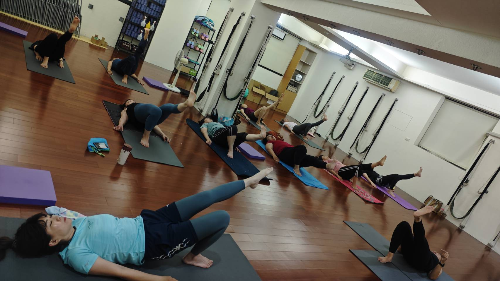

團課、一對一、零基礎入門班，第一次來該選哪一種？

- 三種上課方式都可以是第一次接觸：團課、一對一指導、專為零基礎設計的入門班。
- 想直接融入固定班、跟其他學員一起練，團課是最常見的起點。
- 身體狀況比較特殊、想要老師整堂盯著調整，適合一對一指導。
- 完全沒學過、怕自己拖累別人，零基礎入門班是專門為這種心情設計的。
想開始練，卻卡在「我到底該報哪一種」——這其實是很多人真正卡住的第一步，不是動作難不難。這篇把三種上課方式的差異講清楚，幫你依自己現在的狀況，選一個現在最適合的開始方式。
團課
固定班表，跟其他學員一起練，老師視現場狀況調整每個人的動作幅度。適合已經想融入固定練習節奏的人。
一對一指導
首次體驗 NT$1,500。整堂只服務你一人，節奏完全依你的狀態調整。適合狀況特殊、有舊傷、想被單獨盯著調整的人。
零基礎入門班
首次 NT$399，週一固定時段。從最基本的站姿呼吸開始，不假設你會任何動作。適合完全沒學過、怕跟不上團課的人。
選項一：團課 —— 多數人的起點
團課有固定班表，可以跟其他學員一起練，老師會依現場狀況給提醒，但不會是整堂只盯著你一個人。如果你聽到「團課」會擔心自己拖累別人、跟不上進度，可以先放心：每個人在同一堂課裡做的幅度本來就不會完全一樣，老師會視你當下的狀況調整動作，不會要求全班統一到同一個程度。已經想直接融入固定練習節奏的人，團課通常是最自然的起點。
選項二：一對一指導 —— 想被整堂盯著調整
如果你的狀況比較特殊——比如某個部位特別緊、有舊傷需要更小心的調整幅度、或就是想要老師整堂單獨盯著你——可以預約一對一指導。跟團課比起來，一對一的節奏完全依你當下的狀態調整，沒有要配合其他人。目前的首次體驗方案是以肩頸調整為主軸：先做 AI 體態檢測看清楚問題點，再進行約 50 分鐘的一對一瑜伽調整，加上深層筋膜放鬆，全程約 70 分鐘，首次體驗 NT$1,500。如果你最主要的困擾就是肩頸反覆緊，這個組合會比單純的團課更直接對應到你的需求。
選項三：零基礎入門班 —— 專門為「完全沒學過」設計
如果你的狀況是完全沒學過瑜伽、身體比較硬、最怕的是跟不上團課的節奏——零基礎入門班就是為這種心情設計的。從最基本的站姿與呼吸開始，不會假設你已經會任何動作；前彎碰不到地可以用瑜伽磚墊高，腿伸不直也不會被要求硬壓，老師會用日常說得懂的方式說明身體要放在哪裡，不會只丟出動作名稱要你自己會意。
目前開的是週一班，早上 09:30（60 分鐘，較輕量的開始）跟晚上 19:00–20:30（90 分鐘，下班後較完整的入門練習），兩個時段都是零基礎入門，依你的時間跟體力選一個就好。第一次上完如果覺得不適合，也完全沒關係，不會被要求繼續報名。

已經有一點底子，但不算完全新手，該選哪一種
還有一種常見的狀況：以前上過幾次瑜伽課，或是自己在家跟著影片練過，不算完全零基礎，但也不敢說自己「有底子」。這種情況零基礎入門班會有點可惜——因為它的節奏是設計給完全沒碰過的人，你可能會覺得太慢；但直接跳團課，又擔心自己忘記動作名稱、跟不上熟面孔的默契。這種中間狀態，建議直接從團課開始，先跟老師說明你的背景（哪裡練過、多久沒練、有沒有特別緊繃的部位），老師會依你實際的狀況調整動作幅度，不是只看你有沒有上過課的年資決定要求多嚴格。
選了之後，之後還能換嗎
不用把這次的選擇想得太重。三種上課方式不是綁死的分類，比較像是「現在最適合的起點」，不是「以後只能走這條路」。從零基礎入門班開始，練了一段時間覺得可以跟上團課，之後就能轉過去；團課上一陣子發現有個部位需要更細的調整，也可以之後再加一對一。選錯也不會浪費，先跨出第一步比糾結在「選對選錯」更重要。
還是不確定？可以先做這件事
如果看完三個選項還是拿不定主意，可以先做AI 體態檢測，老師會依你當天的身體狀況，建議比較適合你的方向。如果你想先知道檢測現場實際上會經歷什麼，可以看第一次做 AI 體態檢測會發生什麼事這篇。
不管最後選哪一種，實際約課的方式都一樣：透過 LINE 告訴我們你想預約的項目跟時段，等待回覆確認就完成了，不需要另外下載 App 或填一堆資料。
還在猶豫選哪一種？兩個方向都可以先跨出第一步
不確定自己是哪一種狀況，可以先做檢測讓老師建議；已經知道自己想從零基礎開始，也可以直接約入門班。
本文為課程形式介紹與一般選課建議，非醫療診斷或治療。如有慢性疼痛、近期受傷或特殊病史，請先諮詢合格醫療專業人員，並提前告知授課老師。
常見問題
完全沒上過瑜伽，該選哪一種？
零基礎入門班是專門為完全沒學過的人設計的，也可以先做 AI 體態檢測，讓老師依你的狀況給建議。
團課會不會很多人，老師顧不到我？
每個人做的幅度本來就不會完全一樣，老師會視當下狀況調整動作，不會要求全班統一到同一個程度。
零基礎入門班跟一般團課有什麼不一樣？
零基礎入門班是專門給完全沒學過瑜伽的人，固定時段、從最基本的站姿與呼吸開始；一般團課學員程度較混合，適合已經想融入固定班的人。
一對一指導適合什麼情況？
身體狀況比較特殊、想要老師整堂單獨盯著調整的人，適合預約一對一指導，首次體驗 NT$1,500。
選錯了怎麼辦？
都可以先體驗一次再決定。以零基礎入門班來說，第一次上完如果覺得不適合，完全沒問題，不會被要求繼續報名。